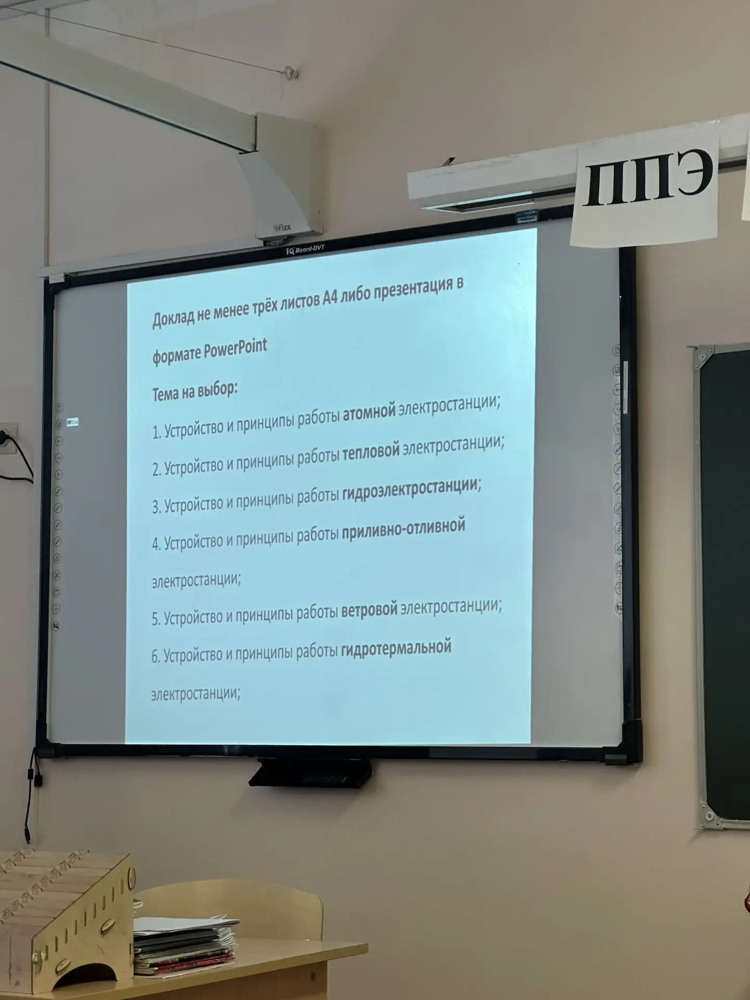

Реферат по географии
Тема: «География размещения атомных электростанций в мире и России»
Атомная энергетика — один из ключевых источников электроэнергии в современном мире. По данным МАГАТЭ, на 2026 год в мире действует 438 ядерных реакторов в 32 странах, суммарная установленная мощность превышает 390 ГВт. АЭС обеспечивают около 10% мирового производства электроэнергии и играют важную роль в энергобезопасности многих государств.
География размещения атомных станций определяется комплексом природных, экономических и социальных факторов, знание которых необходимо для понимания глобальной энергетической карты мира.
Атомная электростанция преобразует энергию деления тяжёлых атомных ядер (урана-235 или плутония-239) в электрическую энергию. Основные элементы:
⚛️ Ядерный реактор
│
▼
┌───────────────┐
│ Деление ядер │──→ 🌡️ Тепловая энергия
│ U-235 / Pu │
└───────────────┘
│
▼
💧 Теплообменник (парогенератор)
│
▼
┌───────────────┐
│ Подогретый │──→ 💨 Высокое давление пара
│ пар │
└───────────────┘
│
▼
⚙️ Турбина ──→ 🔌 Генератор ──→ ⚡ Электроэнергия
│
▼
❄️ Конденсатор (охлаждение водой из реки/моря)
│
▼
💧 Возврат воды в контур (цикл повторяется)
💡 Интересный факт: Наиболее распространены реакторы с водой под давлением (PWR/BWR) и реакторы на быстрых нейтронах (БН).
| Страна | Кол-во реакторов | Доля в энергобалансе | Крупнейшая АЭС |
|---|---|---|---|
| 🇺🇸 США | 93 | ~19% | Пало-Верде |
| 🇫🇷 Франция | 56 | ~70% | Гравлин |
| 🇨🇳 Китай | 55 | ~5% | Тяньван |
| 🇷🇺 Россия | 37 | ~20% | Курская |
| 🇯🇵 Япония | 33 | ~6% | Касивадзаки-Карива |
| 🇰🇷 Южная Корея | 25 | ~30% | Хануль |

Размещение атомной станции — сложный многофакторный процесс. Ключевые условия:
⚠️ Важно: Большинство АЭС в мире расположены вблизи крупных рек или морского побережья именно из-за потребности в охлаждении.
Россия занимает 4-е место в мире по количеству действующих реакторов. География российских АЭС отражает стратегию размещения в европейской части страны и на Урале — в районах с высоким энергопотреблением.
| АЭС | Регион | Мощность, МВт | Особенности |
|---|---|---|---|
| Балтийская АЭС | Калининградская обл. | 1100 | Единственная в регионе |
| Белоярская АЭС | Свердловская обл. | 1480 | Единственная БН-реакторы |
| Билибинская АЭС | Чукотка | 48 | Самая северная в России |
| Калининская АЭС | Тверская обл. | 4000 | 4 блока ВВЭР-1000 |
| Кольская АЭС | Мурманская обл. | 1760 | Северная локация |
| Курская АЭС | Курская обл. | 4000 | 4 блока РБМК-1000 |
| Ленинградская АЭС | Ленинградская обл. | 4200 | 4 блока ВВЭР-1200 |
| Нововоронежская АЭС | Воронежская обл. | 2773 | Первенец ВВЭР |
| Ростовская АЭС | Ростовская обл. | 4033 | 4 блока ВВЭР-1000 |
| Смоленская АЭС | Смоленская обл. | 3000 | 3 блока РБМК-1000 |
В стадии строительства находятся:
🔬 Факт: После аварии на Фукусиме-1 Германия объявила о поэтапном отказе от атомной энергетики (процесс завершится к 2025–2030 гг.), тогда как Франция сохраняет курс на атомную энергетику как базовую.
Атомная энергетика остаётся важнейшим элементом глобальной энергетики. География размещения АЭС диктуется необходимостью близости к водоёмам, сейсмической безопасностью и инфраструктурной освоенностью территорий. Россия, обладая мощным ядерным комплексом и передовыми технологиями реакторостроения (ВВЭР, БН), продолжает развивать атомную энергетику как ключевой фактор энергобезопасности и экспорта технологий.
Работа выполнена в 2026 г.